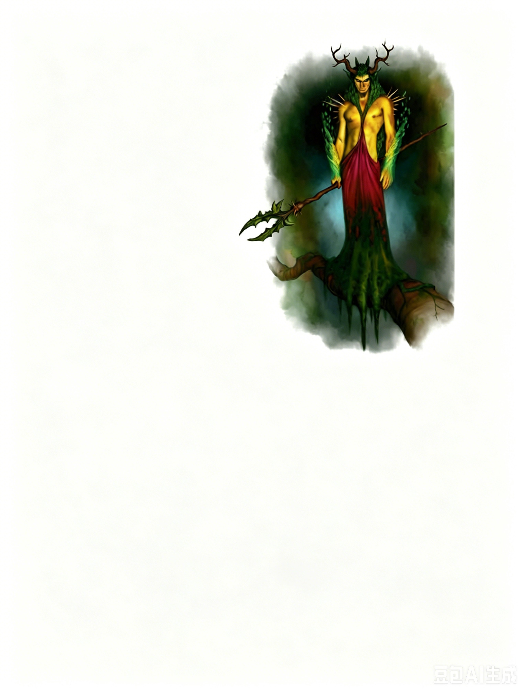

中型精类 | 挑战级数 11一个仿佛将自然融入人形的身影出现在树枝上。其头上长着弯曲如木质的鹿角，背后垂着一缕叶片般的鬃毛，肩膀上突出的尖刺宛如荆棘，其手腕上覆盖着地衣如同护腕。那双眼睛中闪烁着绿色的光芒。
翠绿王子 ―― 通常混乱邪恶。
（旧译：林翠之子）
| 生命骰 | 16d8+64（136HP）；DR 10/寒铁 |
| 先攻 | +12 |
| 速度 | 40 英尺 (8 格) |
| 防御等级 | 26，接触 23，措手不及 18（+8敏捷，+5偏斜，+3天生）；闪避，灵活移动 |
| 基本攻击/擒抱 | +8 / +11 |
| 近战攻击 | 林木之杖 +13/+8 (1d6+6) |
| 占据/触及 | 5 英尺 / 5 英尺 |
| 特殊能力 | 昏暗视觉；抗力：反射闪避；法术抗力 20 |
| 豁免 | 强韧 +14，反射 +23，意志 +17 |
| 属性 | 力量 17，敏捷 26，体质 18，智力 16，感知 15，魅力 21 |
| 技能 | 估价 (Appraise) +8，平衡 (Balance) +15，唬骗 (Bluff) +15，攀爬 (Climb) +8，专注 (Concentration) +13，交涉 (Diplomacy) +14，伪装 (Disguise) +10 (+12 表演时)，脱逃 (Escape Artist) +13，收集信息 (Gather Information) +7，驯兽 (Handle Animal) +6，躲藏 (Hide) +15，威吓 (Intimidate) +17，跳跃 (Jump) +14，知识 (神秘) (Knowledge (arcana)) +8，知识 (地方) (Knowledge (local)) +8，知识 (自然) (Knowledge (nature)) +10，聆听 (Listen) +12，潜行 (Move Silently) +15，搜索 (Search) +8，察言观色 (Sense Motive) +11，手上功夫 (Sleight of Hand) +15，法术辨识 (Spellcraft) +10 (+12 解读卷轴时)，侦察 (Spot) +12，生存 (Survival) +11 (追踪时+13，在地表自然环境中+13)，游泳 (Swim) +8，翻滚 (Tumble) +19，使用魔法装置 (Use Magic Device) +19 (使用卷轴时+21)，绳技 (Use Rope) +8 (涉及绑缚时+10)。 |
| 专长 | 战斗施法，闪避，精通先攻，强化健壮，灵活移动，隐秘，追踪 (B) |
| 语言 | 精灵语，通用语，德鲁伊语，木族语 |
| 进化 | 通过职业等级提升。 |
| 偏好职业 | 德鲁伊 (Druid)；详见正文。 |
| 等级调整值 | +4 |
战斗装备：用尽的林木之杖（视作+2木棍，可随意使用行迹无踪），魔法飞弹魔杖 (5级)。
类法术能力 (施法等级 16)：
随意使用：任意门 (起点与终点需相邻树木或植物生物)，易容术 (DC 16)。
每日一次：恶意变形术 (DC 20)，召唤雷电风暴 (DC 20)，化棍法，治疗重伤，火种术 (DC 21)，驱离金石，荆棘之墙。
特性 SQ：誓约之契，超凡优雅
超凡优雅 (Unearthly Grace, Su)：翠绿王子将其魅力调整值作为豁免检定的加值，并作为 AC 的偏斜加值（已包含在上表中）。
誓约之契 (Oath Bond, Su)：翠绿王子可与另一个自愿的生物订立强大的超自然契约。契约必须涉及物品或服务的交换。若任何一方违背契约，将立即受到以下影响：所有属性减值 -6，且陷入恶心状态直至履行契约为止。
违约的一方将被另一方感知到距离和方向（不跨位面）。
唯有死亡、许愿术或神迹术可解除契约，解除后另一方将察觉到契约已被破坏或中断，但不知具体原因或地点。
翠绿王子更像术士或法师那样作战：
1. 开战时，使用化棍法召唤树人盟友进行近战。
2. 迅速撤退至高处（如树枝上），从远处施法或使用魔法物品攻击敌人。
3. 害怕寒铁武器，利用驱逐金石和荆棘之墙保持距离。
4. 若陷入近战，则使用翻滚 (Tumble) 或任意门脱身。
在战斗中，翠绿王子会尽可能持续作战，使用治疗重伤恢复生命值，直至所有法术与物品耗尽。若情况危急（生命值低于 50%），会先使用任意门拉开距离，伪装自己以逃避追击。一旦成功逃脱，次日可能返回战场追踪敌人并伏击报复。
生态：那些与翠绿王子交配的树精或宁芙，或者本身就是邪恶的精类，有时会生下翠绿王子。这些王子出生后迅速成熟，在一个季节后便完全成长并独立。强大且深信自己优越的翠绿王子，往往对母亲漠不关心，并通常憎恨父亲，即使父母也是翠绿王子之一。与许多其他精类一样，翠绿王子几乎是不朽的。
翠绿王子的饮食习惯与人类相似，但它们的食量仅为同等体型人类的三分之一。因此，它们对环境的影响较小，通常依赖其仆从从精类为其取来所需物品。
环境：翠绿王子偏好温带森林，但可以生活在任何能够支持人类生存的环境中。
典型外貌：翠绿王子身高约 6 英尺，体型修长但肌肉发达，外形近似人类，但带有明显的植物特征。大多数翠绿王子的叶片和苔藓终年保持绿色，但有些会随季节变化而改变颜色，甚至在秋季落叶。
阵营：翠绿王子天生顽皮，随着一个季节的成长，其残忍本性不断增加。大多数在成年后变得邪恶，但有些可能更倾向于守序或混乱。研究精灵传说的学者推测，翠绿王子的阵营和邪恶程度与出生季节有关。例如，春天出生的王子往往更加混乱但不太残忍，而冬天出生的王子则更固守誓言（即使不涉及誓约之契），但内心更加黑暗恶毒。
社会：翠绿王子是邪恶精类和植物生物的领袖。那些长期居住在翠绿王子领地内的生物，往往随着时间的推移，在反复屈从于其意志并参与其阴谋后变得邪恶。
翠绿王子为满足自私欲望而活。它们居住在由臣属建造的居所中，享用他们劳动的果实，将他们用作间谍，并夺取任何它们想要的东西。尽管它们对个体通常残酷而专横，但会努力在其臣属整体面前表现得宽宏大量和宽容。
翠绿王子极为享受将生物诱入一个会导致痛苦与绝望的誓约之契。它会谨慎地履行自己的契约义务，同时要求看似无害但却会引发争端的回报。
典型宝藏：翠绿王子通常拥有双倍标准挑战等级对应的财宝，约 15,000 金币。这些财宝几乎总是来自被击败敌人的魔法物品。由于没有探测魔法的能力，翠绿王子只掠夺明显的魔法物品，例如法杖、卷轴、药剂和权杖。其他财宝通常被分发给属下或与其签订誓约之契的生物。
翠绿王子与职业等级：翠绿王子的首选职业是德鲁伊。此外，游荡者和斥候（详见《Complete Adventurer》）也被视为其关联职业，用于职业进阶。
翠绿王子在费伦：仅有每一代家族中的长子和长女知道这一秘密：深水城 (Waterdeep) 的阿达布伦特 (Adarbrent) 贵族家族数十年来一直派其长子前往克里普特加登森林 (Kryptgarden Forest)，向一位名为巫荆王 (King Witchthorn) 的翠绿王子立下誓约。这些孩子必须在 11 岁之前为这位王子完成一个未具体说明的服务。作为交换，家族的商业与住宅得到了秘密的精类守护。这一协议让家族获益匪浅，而巫荆王从未向他们索取任何东西。如今，阿达布伦特家族将这位翠绿王子视为一位父亲般的恩人，全然不顾将新一代捆绑在精灵未知的黑暗计划之中。
范例遭遇：第一次遇到翠绿王子时，通常显得无害，但略带阴森。王子喜欢与路过的人讨价还价，试图达成有利于自己的誓约之契。他们经常使用易容术，将自己伪装得不再那么具有威胁性，并提出帮助交换其所需之物。翠绿王子在战斗中经常雇佣邪恶的精类或植物生物作为盟友，用它们作为近战的屏障。
林间陷阱 (挑战等级 13)：一位翠绿王子利用一片美丽的森林空地诱捕旅人。三只半羊人在附近的树林中吹奏牧笛，四个邪恶的树精住在围绕空地的橡树中，两位邪恶的宁芙姐妹在空地中心的池塘中嬉戏。半羊人们试图通过音乐和关于美好时光的故事吸引智慧生物进入翠绿王子的陷阱。其他精类潜伏等待，聆听半羊人音乐中的变化以判断是否有受害者接近。
当目标进入空地时，树精和半羊人会尝试用暗示术和魅惑人类安抚他们。如果这一诡计成功，翠绿王子会现身并与最容易受影响的人签订誓约之契。如果失败，宁芙则会现身，用她们的美貌使敌人失明和震慑，随后所有人一起发动攻击。
拥有 知识 (自然) (Knowledge [Nature]) 技能等级的角色可以了解更多关于翠绿王子的信息。当角色成功通过知识检定时，以下信息会根据难度等级 (DC) 逐步揭示：
DC 21：这是一位翠绿王子，一种精灵生物，通常通过服务或礼物换取帮助。这一结果揭示了所有精类的特征。
DC 26：翠绿王子能够施展部分德鲁伊法术，并拥有强大的魔法保护。与许多精类相似，寒铁武器对它们造成的伤害尤为严重，甚至超过了典型精类的伤害效果。
DC 31：翠绿王子邪恶且残忍，喜欢用看似有利的超自然誓约之契诱骗受害者，但这些契约最终往往会造成不幸。